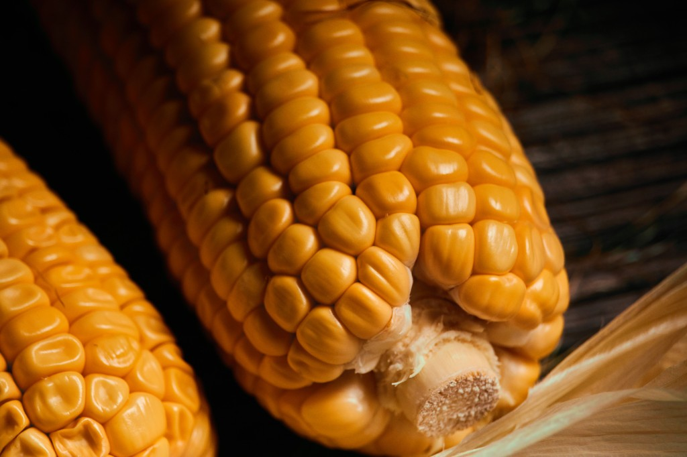

Corn / Maize (Zea mays)
First Cultivated: ~7000 BCE
Optimal Climate: Warm temperate to tropical
Water Requirement: 18 to 25 inches annually
Maize was domesticated from teosinte in southern Mexico and became the sacred staple of Mesoamerican civilizations. Nixtamalization unlocked nutrients and created masa for tortillas and tamales. Today corn is the world's most produced cereal, used for food, feed, and industry.